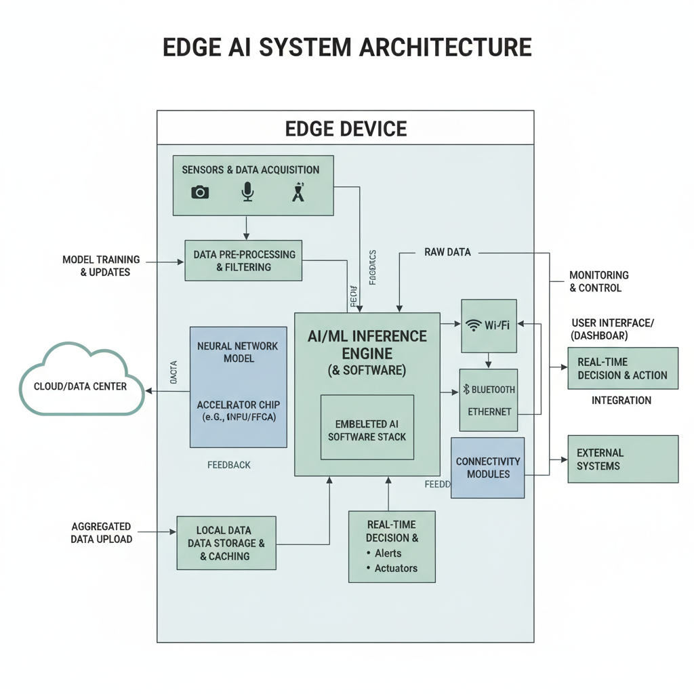
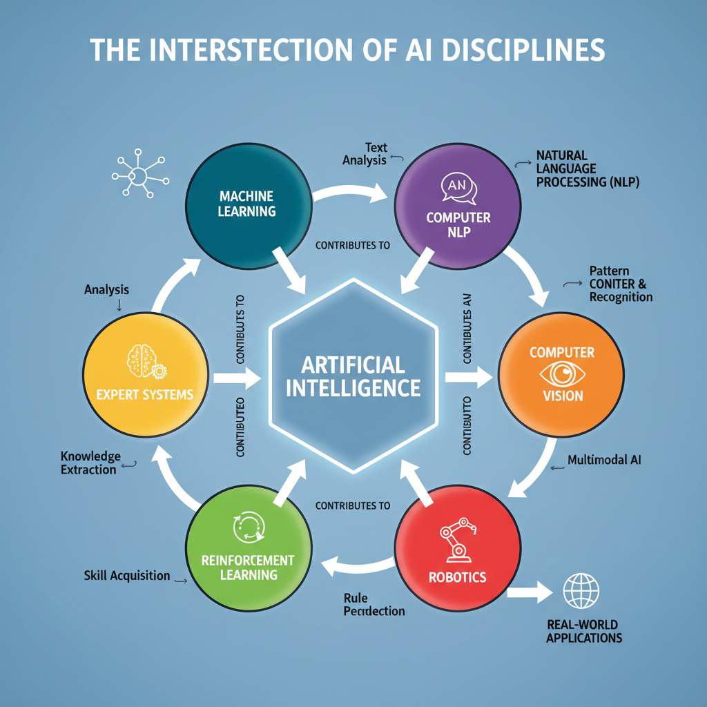

New Scope in AI: Trends and Implications
Recent Predictions for AI Trends in 2026
Predictive chart showing forecasted AI advancements in 2026
Several reputable sources have shared their predictions for AI trends in 2026. According to IBM, there will be an increased focus on Explainable AI (XAI) and transparency, with the goal of building more trustworthy and transparent AI systems (IBM). This trend is expected to have a significant impact on developers working in AI, as they will need to prioritize developing models that can provide insights into their decision-making processes.
In addition, RefonteLearning highlights the growing importance of transfer learning and multimodal learning. Transfer learning allows models to leverage knowledge from one task to improve performance on another related task, while multimodal learning enables models to process and integrate data from multiple sources (text, images, audio, etc.). These advancements are expected to revolutionize the way developers approach AI model development and deployment.
These predictions suggest that 2026 will be a year of significant progress in AI research and development. As developers, it's essential to stay informed about these trends and their implications for our work. By understanding the latest developments in XAI, transfer learning, and multimodal learning, we can better position ourselves to build more effective and efficient AI models.
Key takeaways from these predictions include:
- Increased focus on Explainable AI (XAI) and transparency
- Growing importance of transfer learning and multimodal learning
As we move forward into 2026, it's crucial that developers prioritize staying up-to-date with the latest advancements in AI research and development. By doing so, we can unlock new opportunities for innovation and growth in this rapidly evolving field.
The Rise of Edge AI and its Impact on Development

Illustration of edge AI's hardware and software components
Edge AI is gaining momentum as a key trend in the AI landscape, with far-reaching implications for software development. According to recent predictions (https://www.ibm.com/think/news/ai-tech-trends-predictions-2026), edge AI is expected to play a crucial role in shaping the future of AI and tech.
Benefits of Edge AI
The benefits of edge AI are multifaceted, with reduced latency and increased security being two significant advantages. By processing data closer to the source, edge AI reduces the time it takes for data to travel to the cloud or a central server, resulting in faster decision-making and improved real-time processing capabilities.
Real-Time Processing and Decision-Making
Edge AI enables real-time processing and decision-making at the device level, allowing for more efficient and effective use of computing resources. This is particularly important in applications such as autonomous vehicles, industrial automation, and smart cities, where timely decisions can mean the difference between success and failure.
Challenges and Limitations
While edge AI offers many benefits, there are also potential challenges and limitations to consider. For example, the increased power consumption and heat generation associated with edge AI devices may lead to performance and reliability issues. Additionally, the security risks associated with edge AI, such as data breaches and unauthorized access, must be carefully mitigated.
As the field of edge AI continues to evolve, it is essential for developers to stay informed about the latest trends and developments in this area. By understanding the benefits and challenges of edge AI, developers can better design and implement systems that take advantage of its capabilities while minimizing its limitations.
New Scope in AI: Opportunities and Challenges

Visual representation of the new scope in AI
The emerging trends in AI are transforming various aspects of our lives, from healthcare to sustainability. According to IBM's predictions for 2026, AI and tech will shape the future, with a focus on human-centered AI that enhances human capabilities.
Growing Importance of AI in Healthcare and Life Sciences
Artificial intelligence is increasingly being used to improve healthcare outcomes and reduce costs. For instance, AI-powered algorithms can analyze medical images to detect diseases like cancer at an early stage. Additionally, AI-driven chatbots are being used to provide patient support and answer common queries.
AI can also be used to develop personalized medicine by analyzing genetic data and identifying patterns that can help predict patient responses to treatments. This has the potential to revolutionize the way we approach healthcare, making it more efficient and effective.
Addressing Global Issues with AI
AI can also play a crucial role in addressing pressing global issues like climate change and sustainability. For example, AI-powered systems can analyze satellite images to track deforestation and identify areas that need conservation efforts. This data can be used to develop strategies for sustainable land use and reduce greenhouse gas emissions.
Moreover, AI-driven predictive analytics can help companies optimize their supply chains and reduce waste, thereby reducing the carbon footprint of their operations. By leveraging AI in this way, businesses can contribute to a more sustainable future while also improving their bottom line.
Potential Risks and Challenges
While AI has the potential to bring about significant benefits, it also poses some challenges. For instance, there is a risk that AI systems could be used to manipulate public opinion or spread disinformation. Additionally, as AI becomes increasingly integrated into our daily lives, there is a growing concern about job displacement and the need for workers to develop new skills.
Furthermore, there are concerns about the ethics of AI development and deployment. For example, who should be held accountable when an AI system makes a mistake? These challenges highlight the need for careful consideration and regulation as we move forward with the adoption of AI technologies.
The Future of AI: What Does it Mean for Developers?
Emerging trends in AI are poised to significantly impact software development processes, presenting both opportunities and challenges for developers. According to recent predictions, The trends that will shape AI and tech in 2026 will continue to emphasize the importance of automation, making tools like automated testing and debugging increasingly crucial.
On one hand, AI-powered tools can enhance software development by automating repetitive tasks, improving code quality, and reducing development time. For instance, AI-driven testing frameworks can identify bugs and vulnerabilities more efficiently than traditional manual testing methods. However, adopting these tools also comes with challenges, such as ensuring data accuracy, handling bias in AI models, and maintaining explainability.
Moreover, the integration of AI into software development requires developers to develop new skills and competencies. Key areas include Machine Learning in 2026: Trends, Skills, and Career Opportunities, which highlights the growing need for expertise in areas such as model interpretability, data preprocessing, and deployment strategies. As AI continues to transform software development, it is essential for developers to adapt and acquire these skills to remain relevant in the industry.
Insufficient Sources: AI Trends and Implications
As we navigate the rapidly evolving landscape of artificial intelligence (AI) in 2026, it's essential to acknowledge the limitations of current evidence on AI trends. The predictions and research surrounding AI in the coming year are based on various sources, including IBM's "The trends that will shape AI and tech in 2026" and Refonte Learning's "Machine Learning in 2026: Trends, Skills, and Career Opportunities." However, it's crucial to recognize that these sources may be subject to bias or misinformation.
There are several potential sources of bias or misinformation in AI predictions and research. For instance, the predictions made by researchers and experts may be influenced by their own interests, biases, or funding sources. Additionally, the complexity of AI systems can make it challenging to accurately predict future trends. Furthermore, the rapidly changing nature of AI technology means that new breakthroughs and discoveries are being made at an unprecedented rate.
Given these limitations, it's essential to approach predictions about AI trends in 2026 with a healthy dose of skepticism. While some trends may have a strong foundation in current research, others may be speculative or based on incomplete data. As such, it's crucial for developers to stay up-to-date with the latest developments in AI research and trends, rather than relying solely on predictions or forecasts.
To do so, we encourage readers to regularly check reputable sources, such as academic journals, industry reports, and news outlets, for the latest information on AI trends. By staying informed and critically evaluating available evidence, developers can make more informed decisions about their own projects and investments in AI technology.